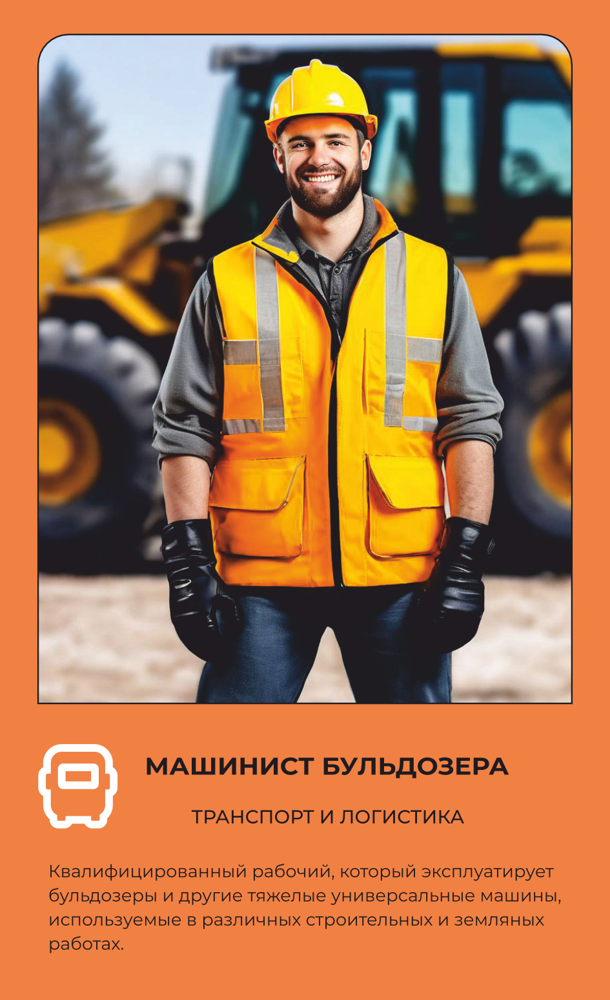

Машинист бульдозера
Двигает бульдозером тысячи тонн грунта.
Основной вид деятельности
Управляет бульдозером — тяжёлой строительной машиной для перемещения и выравнивания грунта на стройплощадке или в карьере.
Что делает на рабочем месте
Машинист бульдозера с помощью рычагов и педалей двигает многотонную машину вперёд, назад, поднимает и опускает отвал, сдвигая и выравнивая тонны грунта за смену. По чертежам и техническим схемам формирует нужный рельеф — откосы, выемки, насыпи, — а также перемещает строительные отходы и материалы там, где это нужно бригаде. Перед началом работы сверяется с технической документацией и первичной отчётностью, а во время смены следит за расходом топлива и горюче-смазочных материалов. Работа связана с постоянной вибрацией и шумом двигателя, поэтому машинист пользуется антивибрационными перчатками и противошумными наушниками, закреплёнными на каске. На стройплощадке держит связь с прорабом и другими членами бригады, чтобы не столкнуться с техникой и не задеть коммуникации под землёй. Из спецодежды — сигнальный жилет повышенной видимости, каска, защитные очки и утеплённый костюм зимой, когда работы на открытом воздухе не прекращаются даже в мороз.
Что производит
Управление бульдозером: Машинист ответственен за управление бульдозером, используя специальные рычаги и педали для перемещения машины вперед, назад, поворота и поднятия/опускания рабочего оборудования. Земельные работы: Основной задачей машиниста бульдозера является выполнение земельных работ. Это включает в себя перемещение и выравнивание грунта, создание откосов, формирование выемок, намыв и другие задачи, связанные с изменением рельефа земли. Работа с отходами и материалами: Бульдозеры могут использоваться для сдвига и переработки строительных материалов, в том числе грунта, камней и других отходов. Обеспечение безопасности: Машинист бульдозера обязан соблюдать правила техники безопасности при работе с машиной и вокруг неё, предотвращая возможные аварии и травмы. Сотрудничество с бригадой: Машинист должен эффективно взаимодействовать с другими членами строительной бригады, инженерами и прорабами, следуя инструкциям и выполняя задачи в соответствии с планами проекта. Техническое обслуживание: Регулярное обслуживание и проверка технического состояния бульдозера, а также проведение небольших ремонтных работ, когда это необходимо. Использование различных рабочих инструментов: Машинист может использовать различные рабочие приспособления и оборудование, прикрепляемые к бульдозеру, в зависимости от конкретных задач (например, лезвия, отвалы и другие).,
Оборудование и инструменты
Спецодежда и СИЗ
одежды
Костюм для защиты от общих производственных загрязнений и механических воздействий Жилет сигнальный 2 класса защиты Перчатки с полимерным покрытием Перчатки антивибрационные Каска защитная Подшлемник под каску Наушники противошумные (с креплением на каску) или Вкладыши противошумные Средство индивидуальной защиты органов дыхания (СИЗОД) противоаэрозольное Очки защитные Зимой дополнительно: Костюм на утепляющей прокладке Белье нательное утепленное/.
Спецобувь
обуви
Сапоги кожаные с защитным подноском Зимой дополнительно: Валенки с резиновым низом При работе на обводненных участках работ дополнительно: Сапоги резиновые с защитным подноском*
Где учиться
23.01.06 МАШИНИСТ ДОРОЖНЫХ И СТРОИТЕЛЬНЫХ МАШИН
Где работать
Похожие профессии
Данные — карточка 20 из 160, отрасль «Транспорт и логистика». Зарплата — оценочная вилка по региону.